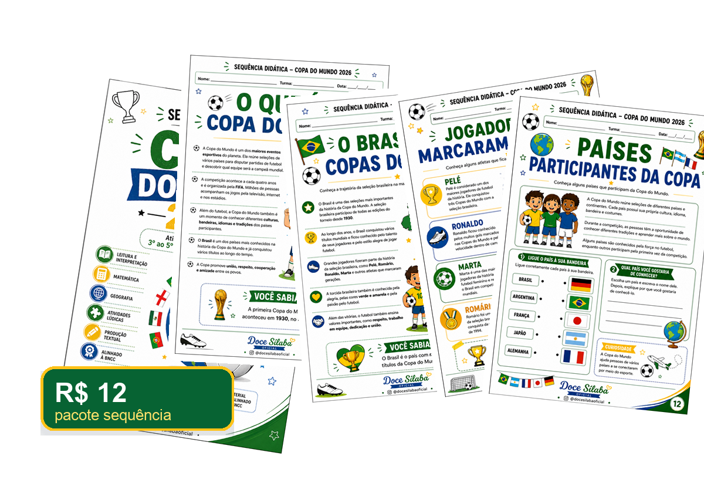

Pacote base
Sequência Didática Copa 2026
Ideal para quem quer o material principal pronto para imprimir.
- 27 páginas em PDF
- Atividades para 3º ao 5º ano
- Leitura, matemática, geografia e produção textual
- Certificado + medalha recortável
- Entrega digital no WhatsApp
de R$ 19,90 por
R$ 12
Comprar sequência